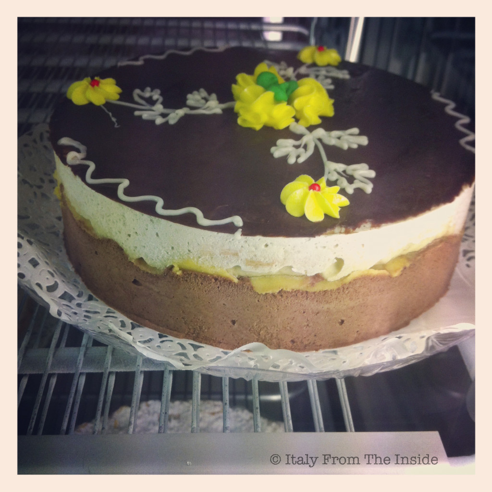

If you take some gelato and shape it up into a cake you get the torta gelato. Add some colorful decorations as well and it becomes a nice present to bring to a dinner with friends. Check it out the next time you go to Italy, since some of them are really beautiful.